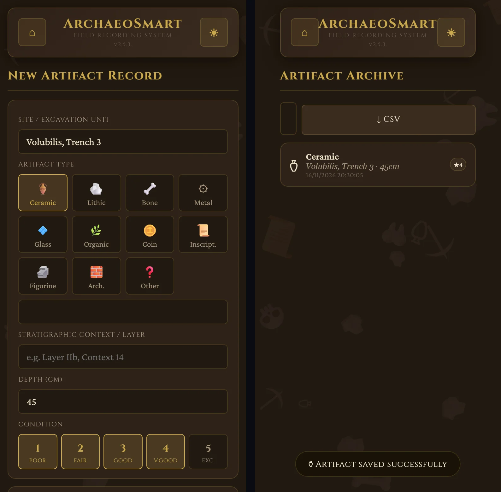

ArchaeoSmart
Offline field app for archaeologists · 2025–26
Code written by me

The problem. Archaeologists still record finds on paper, which is fragile and cannot be searched, and dig sites often have no signal.
My contribution
I wrote the app’s code. It records a find by form or by a spoken interview, tags it with GPS, prints and scans QR labels, keeps site sketches, and exports everything as CSV.
How a find is saved offline. Pressing Save writes the record to the phone’s own storage straight away, and a service worker keeps the app itself cached. It opens, records and lists finds with no network; nothing is sent to a server.
One problem I solved. Voice input. Phone browsers end speech recognition on their own schedule, and iOS still fires “end” events after a cancel, so the microphone restarted by itself or cut people off mid-answer. Each listening session now carries an id that late events are checked against, recognition restarts while an answer is still open, and an answer is accepted only after 1.8 seconds of silence.
Team result. This was the innovation project of LOGIKO, the FIRST LEGO League team I led. The team won first place in Morocco and a place at the championship in Houston. That result belongs to the team; the app’s code is my part of it.